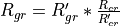

WSF_SAR_SENSOR¶
- sensor WSF_SAR_SENSOR¶
Script Class: WsfSAR_Sensor
sensor <name> WSF_SAR_SENSOR Platform Part Commands ... ... sensor Commands ... WSF_SAR_SENSOR Common Commands ... mode <name> ... Antenna Commands ... transmitter Commands ... receiver Commands ... WSF_SAR_SENSOR Mode Commands end_mode end_sensor
Overview¶
WSF_SAR_SENSOR provides a basic implementation of a synthetic aperture radar sensor. It supports both ‘spot’ and ‘strip’ modes using the operating_mode command.
The output from WSF_SAR_SENSOR is a WsfImage contained within a WSF_IMAGE_MESSAGE (spot mode) or a WSF_VIDEO_MESSAGE (strip mode). The output is typically sent to a WSF_IMAGE_PROCESSOR, which takes the image and produces tracks that are then sent to a WSF_TRACK_PROCESSOR for incorporation into the local master track list.
The sensor uses the optical_signature of a platform to determine the approximate number of pixels an object occupies in the image, and uses the radar_signature to determine the pixel intensity.
There are a few things that a user of this sensor should observe:
The azimuth_field_of_view and elevation_field_of_view commands should be used to omit targets outside the 3 dB beamwidth. A target slightly outside the field-of-view may cause a sufficient return, but the organization of the bins may prohibit the object from being seen.
In addition to the field-of-view limits, the maximum_range is very important when using the strip mode. This can significantly improve performance by limiting the number of objects the sensor has to look at during its sampling interval.
Either the dwell_time or resolution must be defined.
The pulse_repetition_frequency of the transmitter will be computed if it is not defined. Using the cueing information at the time of sensor turn-on or mode change, the center-of-interest will be determined. The PRF will be computed such that a pulse returned from the center-of-interest will be unambiguous in range.
The sensor should be cued to the desired center-of-interest or azimuth/elevation angle prior to turning on the sensor. This is typically done with WsfArticulatedPart.CueToTrack, WsfArticulatedPart.CueToLLA, WsfArticulatedPart.CueToPoint or WsfArticulatedPart.CueToAbsoluteAzEl. Note: Do not use the WsfTaskManager.StartTracking of WsfTaskManager. That command serves a different purpose.
Common Commands¶
The following commands are common to all modes of a SAR sensor.
- intensity_limits <db-power-value> min-db-power <db-power-value> max-db-power¶
Specifies the range used to map signal strength to normalized pixel intensity in the resulting image. A signal strength less than <min-db-power> will have a pixel intensity of zero, while a signal strength greater than <max-db-power> will have a pixel intensity of one.
Note
If intensity_limits and intensity_range are both specified, the last one will be used.
- intensity_range <db-power-value>¶
Specifies the range used to map signal strength to a normalized pixel intensity. A signal strength less than noise_power will have a pixel intensity of zero, while a signal strength greater than receiver noise power plus the value of this command will have a pixel intensity of one.
Note
If intensity_limits and intensity_range are both specified, the last one will be used.
- rescale_substandard_image <boolean-value>¶
For ‘spot’ mode only. Specifies if a ‘substandard image’ should be rescaled so its aspect ratio of the pixels is the same as a ‘standard image.’ A ‘substandard image’ is one where the the collection time was insufficient to produce the desired cross range resolution (as defined by resolution command or derived from the dwell_time command.
When a spot SAR request is started, the model computes the collection time needed to create an image of the requested cross range resolution. When the sensor is subsequently turned off, it computes the achieved cross range resolution based on the actual collection time. If the achieved resolution is greater than the requested resolution, the image is ‘substandard.’ If the value of this command is true, the model will adjust the achieved ground range resolution so as to maintain the pixel aspect ratio:

(Where the primed values are the requested values and the unprimed values are the achieved values).
This has the effect of reducing the number of pixels occupied by targets in the image (i.e., a target of a given size will have fewer, but coarser, pixels in a substandard image.)
Default: true
- show_calibration_data¶
If specified, the model will display general sensor performance data (e.g., power, frequency, antenna gains) when the sensor is created.
- show_status¶
If specified, the model will display certain key calculated parameters whenever the sensor changes state (turned on or off or mode changed).
- call_sensor_track_observers <boolean-value>¶
Specify if the ‘sensor track observers’ should be called. If true, sensor track observer events will be invoked which enables the generation of data that allows many visualization tools to display detection lines during the image formation process. These extra events, however, may cause problems to some observers if they haven’t been modified to ignore these events (which is the reason for the default being ‘false’).
Default: false
- sar_constraint_plotting <boolean-value>¶
If ‘true’, the model will internally remove certain internal limits to allow a ‘SAR Constraint plot’ to be properly created within using the horizontal_map function of sensor_plot.
In particular, the following limits be redefined to the specified values:
azimuth_slew_limits -180 degrees 180 degrees elevation_slew_limits -90 degrees 90 degrees azimuth_cue_limits -180 degrees 180 degrees elevation_cue_limits -90 degrees 90 degrees
and for each mode:
azimuth_field_of_view -180 degrees 180 degrees elevation_field_of_view -90 degrees 90 degrees electronic_beam_steering_limit 90 degrees
Mode Commands¶
- operating_mode [ spot | strip ]¶
Specifies the operating mode. In ‘spot’ mode, when the sensor is turned on, it will be trained on the current cued location and an ‘image will be formed. The image will be delivered when the sensor is subsequently turned off, either as a result of automatic_turn_off or by an explicit external request (WsfSensor.TurnOff).
In ‘strip’ mode the sensor will produce a continuously updated ‘image,’ which will include only the objects that have been detected since the last sample.
Default: spot
- automatic_turn_off¶
For ‘spot’ mode only. If specified the sensor will automatically turn itself off after the dwell_time or by the time required to form an image whose resolution is at least that specified by resolution.
Default: The sensor must be turned off by the application.
- resolution <length-value>¶
Specifies the desired cross range resolution of an image cell/pixel. This is used to compute the dwell time necessary form a image of the specified cross range resolution.
Note that the ground range resolution is dictated by the pulse_width and pulse_compression_ratio of the transmitter. If the pulse width is not defined then it will be computed as the reciprocal of the bandwidth of the receiver (matched filter assumption).
Default: No default. Either dwell_time or resolution must be specified.
Note
If both dwell_time and resolution are defined, the second command will override the first.
- dwell_time <time-value>¶
Specifies the ‘collection time,’ or the amount of time the sensor will dwell on the location in order to form the image. This is also used to predict cross range resolution.
Default: No default. Either dwell_time or resolution must be specified.
Note
If both dwell_time and resolution are defined, the second command will override the first.
- maximum_dwell_time <time-value>¶
For ‘spot’ mode only. If specified, the dwell time computed to achieve the desired resolution will be limited to this value.
Default: 999 seconds
- maximum_detectable_speed <speed-value>¶
Specifies the maximum possible speed at which an object can be traveling and still be present in the image.
Default: 2 m/s
- minimum_clutter_to_noise_ratio <ratio>¶
For ‘spot’ mode only. Specifies the clutter-to-noise ratio below, which the image will be declared to be ‘substandard.’ See inhibit_substandard_collection for more information.
- inhibit_substandard_collection <boolean-value>¶
For ‘spot’ mode only. If true, the request to collect an image will be suppressed if the internally computed clutter-to-noise ratio for the desired resolution is below the minimum_clutter_to_noise_ratio. This effectively prohibits the sensor from being turned on until the conditions are present that would allow collection of an image of the desired image resolution.
Default: Image collection will not be suppressed.
- doppler_filter_broadening_factor <unitless-value>¶
This accounts for the fact that Doppler filters do not have rectangular weighting. Slightly widens the filter to control “bleeding” energy into adjacent filters. This is typically in the range of [ 1.0, 2.0 ].
Default: 1.0
- doppler_foldover_margin_factor <unitless-value>¶
- doppler_overcollect_ratio <unitless-value>¶
A ‘safety margin’ to be used when computing the minimum PRF that is allowed. This is typically in the range of [ 1.0, 2.0 ].
Default: 1.0
- image_width <length-value>¶
- image_height <length-value>¶
Specify the width and height respectively of SAR image area as measured on the ground. This provides a more precise means of specifying the size image area rather than attempting to use the azimuth and elevation field of view, which would need to vary based on the depression angle.
Note
Both image_width and image_height must be specified to be effective.
Default: 0 m for both values (Uses the azimuth and elevation field of view).
- image_size <length-value>¶
An alternative means of specify the height and width of SAR image area as measured on the ground. This is the same as specifying the same value for image_width and image_height.
Default: not specified.
- sar_error_model_parameters … end_sar_error_model_parameters¶
This command will invoke the range and Doppler error computation and application to generate SAR Target Location Errors. This involved translating SUPPRESSOR’s mtsar.f routine, which was merely a translation from TRIMSIM. This generates a Range and Doppler variance that was then used in an error application routine coded from equations to compute SAR Target Location Errors (TLEs). The new input data is as follows, and if used will supersede the baseline error computation method.
sar_error_model_parameters platform_position_error_sigmas <length-value> <length-value> <length-value> platform_velocity_error_sigmas <speed-value> <speed-value> <speed-value> inter_system_time_delay <time-value> range_error_sigma <length-value> doppler_frequency_error_sigma <frequency-value> transmit_frequency_error_sigma <frequency-value> range_cursor_location_error_sigma <length-value> range_target_selection_error_sigma <length-value> doppler_cursor_location_error_sigma <length-value> doppler_target_selection_error_sigma <length-value> atmospheric_refraction_residual <unitless> end_sar_error_model_parameters
- platform_position_error_sigmas <length-value> <length-value> <length-value>¶
Defines the sensing platform’s location errors due to GPS or INS inaccuracies. These are in an NED coordinate frame.
Default: 0 m 0 m 0 m
- platform_velocity_error_sigmas <speed-value> <speed-value> <speed-value>¶
Defines the sensing platform’s velocity errors due to GPS and/or IMU inaccuracies. These are in an NED coordinate frame.
Default: 0 m/s 0 m/s 0 m/s
- inter_system_time_delay <time-value>¶
Needs description.
Default: 0 microsec
- range_error_sigma <length-value>¶
Sensor’s range measurement accuracy error standard deviation.
Default: 0 m
- doppler_frequency_error_sigma <frequency-value>¶
Sensor’s doppler measurement accuracy error standard deviation.
Default: 0 hz
- transmit_frequency_error_sigma <frequency-value>¶
Sensor’s transmit frequency error standard deviation.
Default: 0 hz
- range_cursor_location_error_sigma <length-value>¶
Needs description.
Default: 0 m
- range_target_selection_error_sigma <length-value>¶
Needs description.
Default: 0 m
- doppler_cursor_location_error_sigma <length-value>¶
Needs description.
Default: 0 m
- doppler_target_selection_error_sigma <length-value>¶
Needs description.
Default: 0 m
- atmospheric_refraction_residual <unitless>¶
Needs description.
Default: 0.0